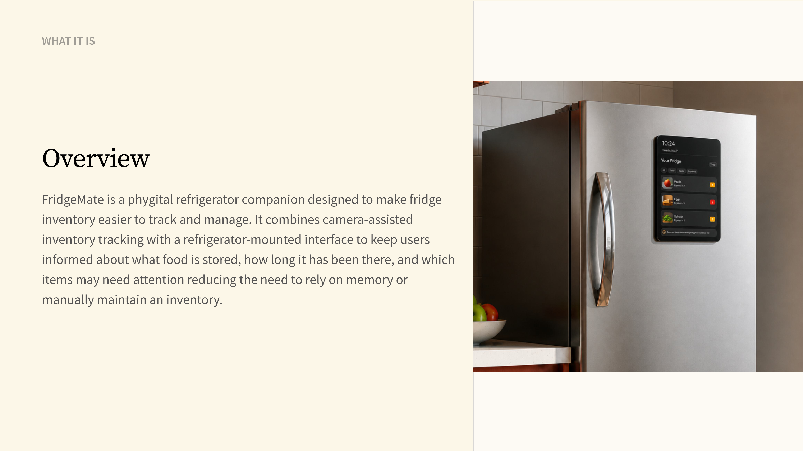
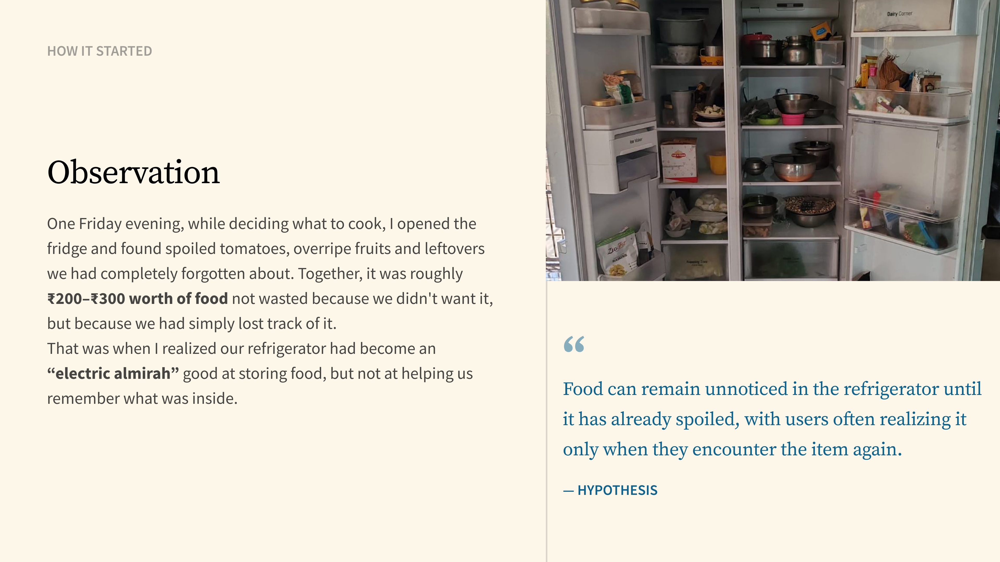
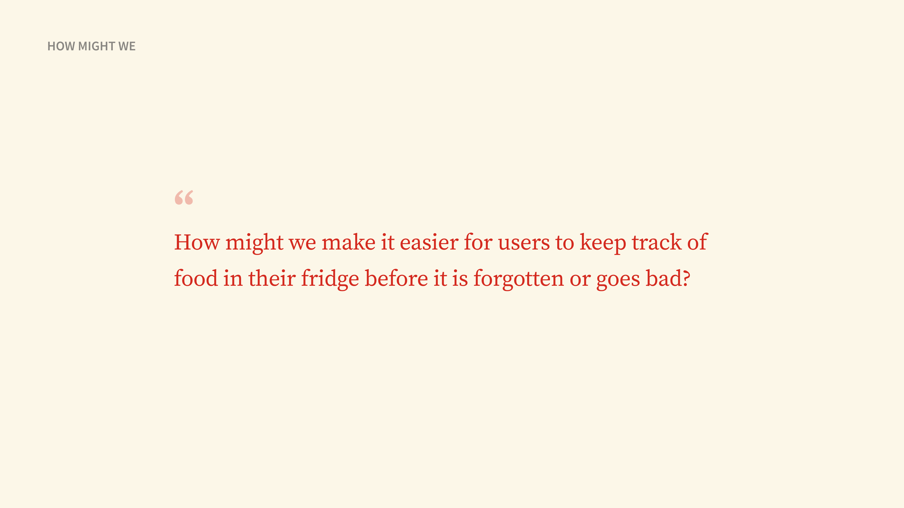
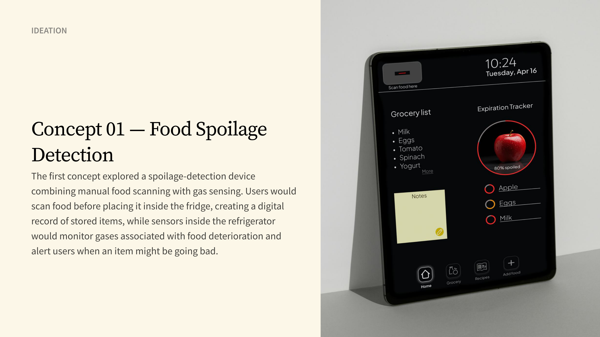
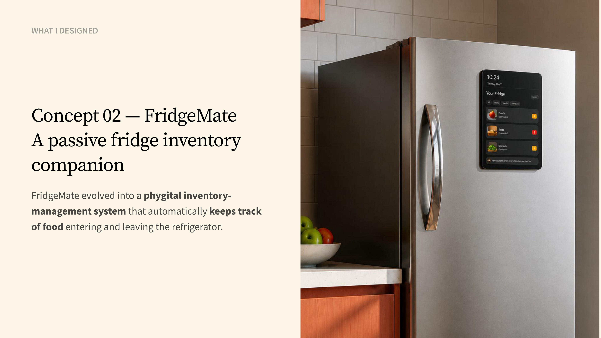
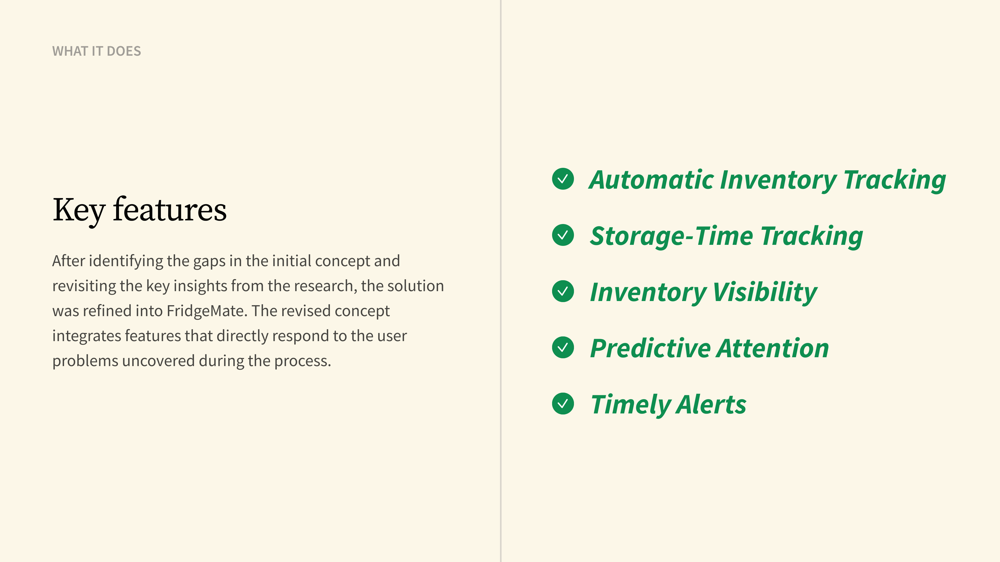
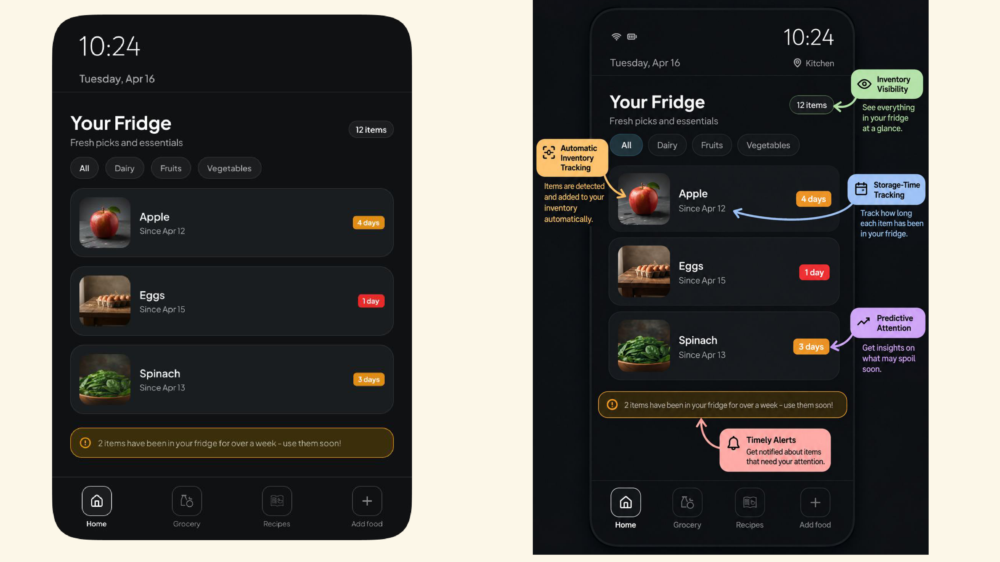

Product + UX · Phygital concept · June 2024
FridgeMate
Making Forgotten Food Visible Before It Becomes Waste
what it is
Overview
FridgeMate is a phygital refrigerator companion designed to make fridge inventory easier to track and manage. It combines camera-assisted inventory tracking with a refrigerator-mounted interface to keep users informed about what food is stored, how long it has been there, and which items may need attention — reducing the need to rely on memory or manually maintain an inventory.

How it started
Observation
One Friday evening, while deciding what to cook, I opened the fridge and found spoiled tomatoes, overripe fruits and leftovers we had completely forgotten about. Together, it was roughly ₹200–₹300 worth of food — not wasted because we didn't want it, but because we had simply lost track of it.
That was when I realized our refrigerator had become an "electric almirah" — good at storing food, but not at helping us remember what was inside.
Food can remain unnoticed in the refrigerator until it has already spoiled, with users often realizing it only when they encounter the item again. — hypothesis

how it is going
Research
To understand whether my initial observation reflected a wider problem, I explored household and fridge food waste through secondary research, surveys, and user interviews. The research helped establish the scale of the problem and understand how commonly stored food ends up being overlooked or wasted in everyday fridge use.
what i found
Key Insights
After completing the research, I analyzed the survey data and interview responses to identify recurring patterns in how users manage food inside their refrigerators. Synthesizing these findings revealed four key insights that captured the recurring gaps in visibility, awareness, and everyday tracking of stored food.
How might we make it easier for users to keep track of food in their fridge before it is forgotten or goes bad?

ideation
Concept 01 — Food Spoilage Detection
The first concept explored a detection-first approach — a system that attempted to identify food spoilage through sensors and manual logging.

why it failed
Limitations
Evaluating the first concept revealed several gaps in both the user experience and system feasibility. These limitations showed that the solution was adding effort while still leaving critical gaps in how food was tracked and spoilage was detected.
what i changed
Shifting the approach
The limitations of the first concept changed how I approached the solution. Rather than building a system that depended on users to manually log food and then waited for signs of spoilage, I shifted toward maintaining an automatic record of what was inside the fridge and how long it had been there.
what i designed
Concept 02 — FridgeMate
A passive fridge inventory companion

what it does
Key Features
After identifying the gaps in the initial concept and revisiting the key insights from the research, the solution was refined into FridgeMate. The revised concept integrates features that directly respond to the user problems uncovered during the process.

